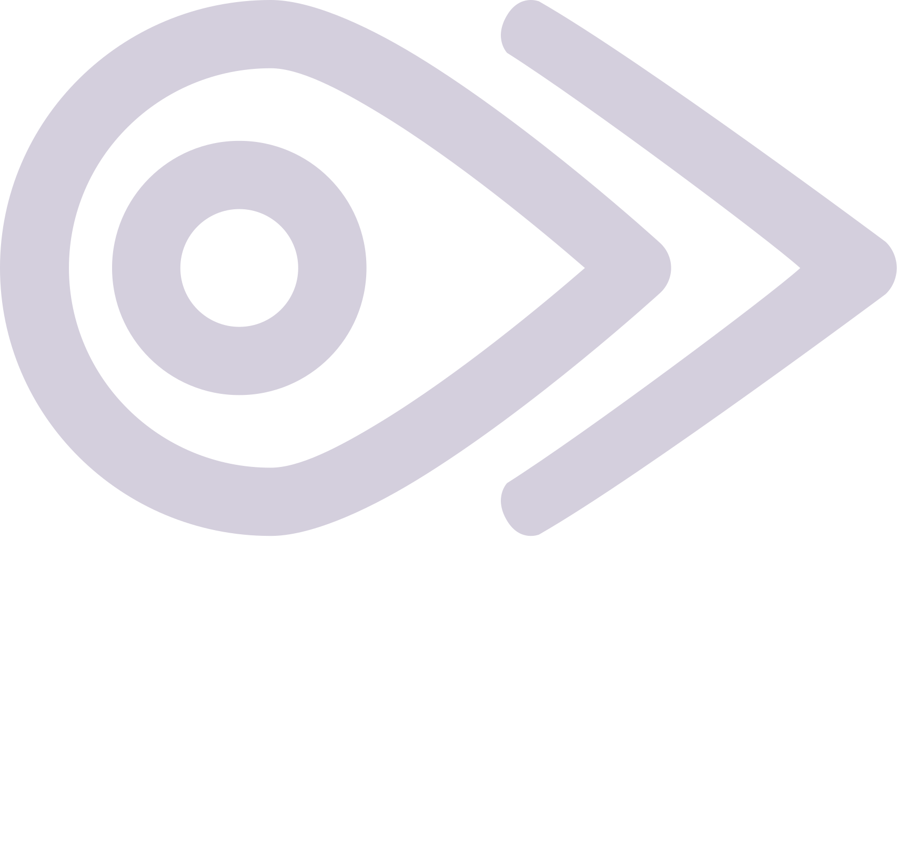

|
 |
We build tools for the bird communityFounded in 2026 by a team of avid birders in Norway. We strive to create data-driven tools for the bird community (from birdwatching to research). Our goal is to share our love of nature and provide a spotlight on the need for conservation efforts.
Read more >
|
FoundersNinni Victoria and Paul Richard met in 2024 and bonded instantly over a love of books and birds. What began as a hobby of collecting vintage field guides led to greater involvement in the birding community, evolving into volunteering and conservation work, and sparking the creation of fugl.io. Ninni Victoria (she/her), born in Oslo, is a the Technology Projects Architect at BirdLife Norway,
and is a board member of its Østfold chapter. She has a background in web/app development.
Paul Richard (he/him), originally from Canada, served as an analyst with the NHL's Nashville Predators hockey team in the
United States for 10 years, utilizing statistics in player valuation and arbitration, before retreating to a quieter life
focused on nature and the outdoors. He holds a Master's Degree in Human Kinetics from the University of Ottawa.
© 2026 Aviala.io. Terms and Conditions - Privacy Policy - Cookie Preferences |
|